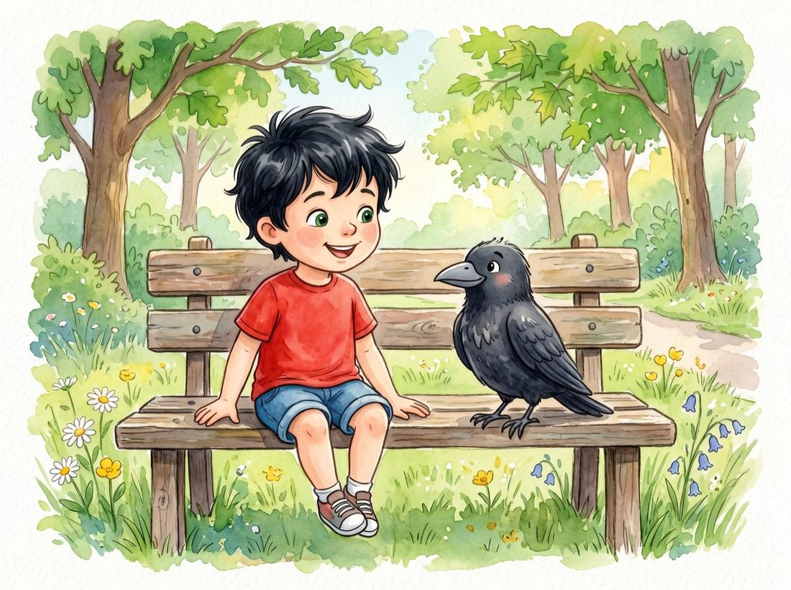
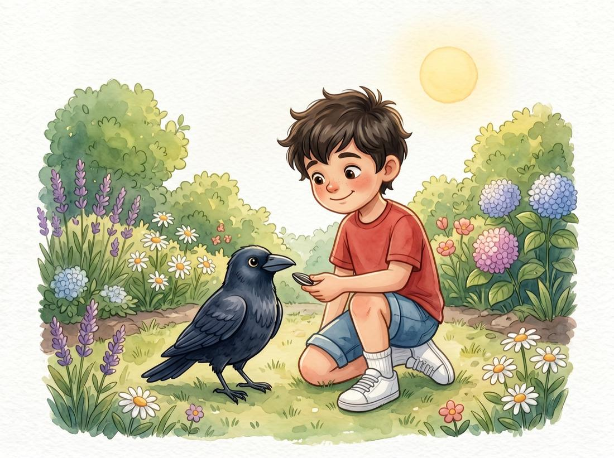
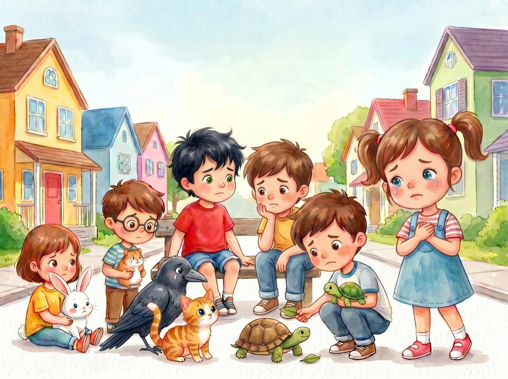
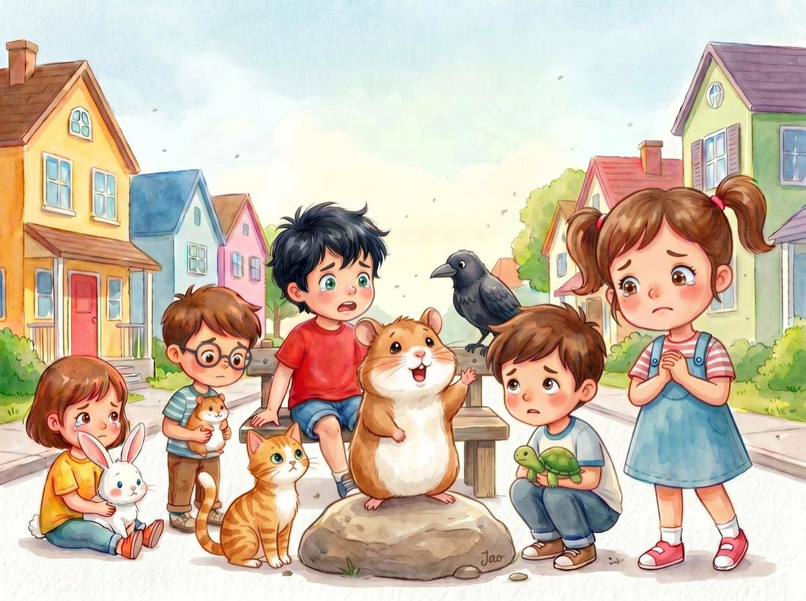
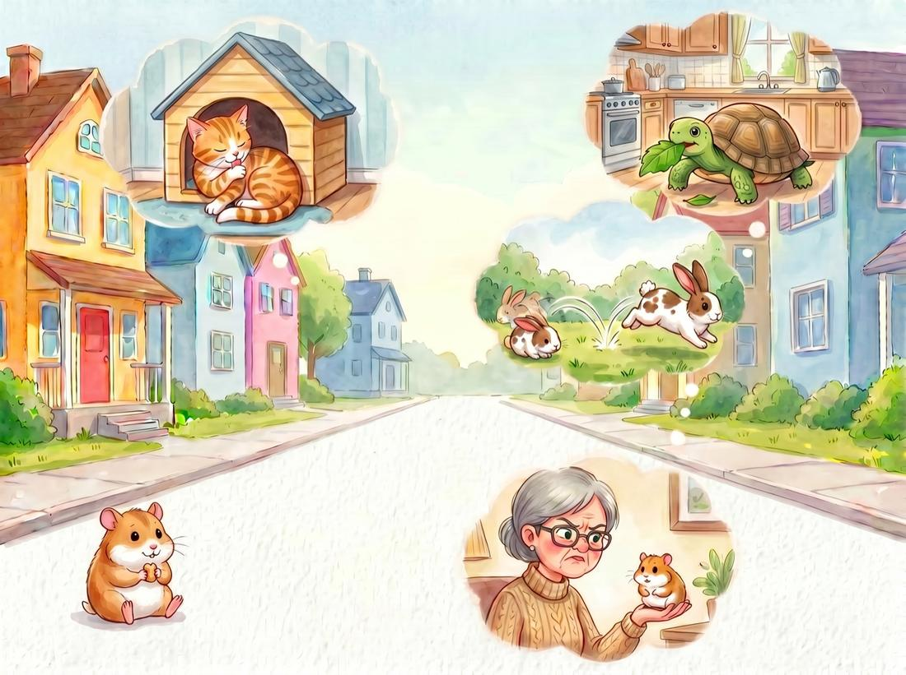
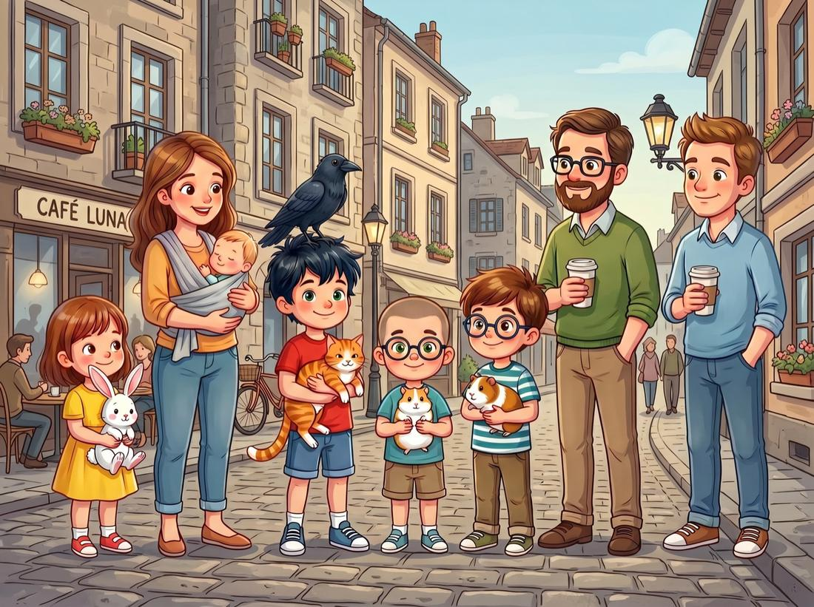
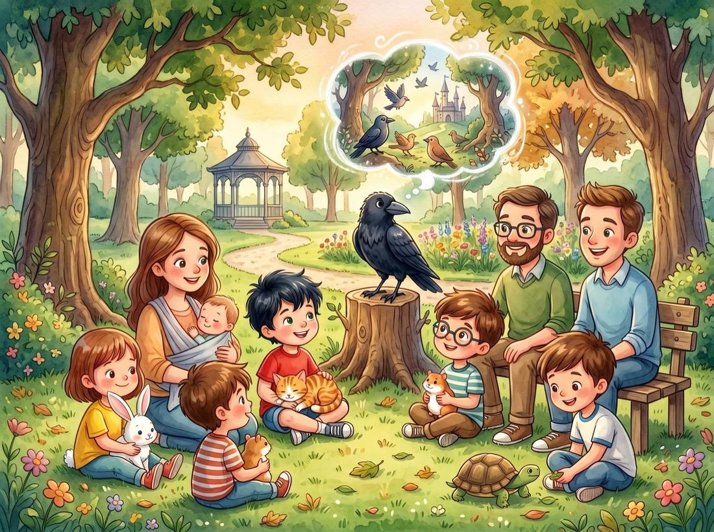
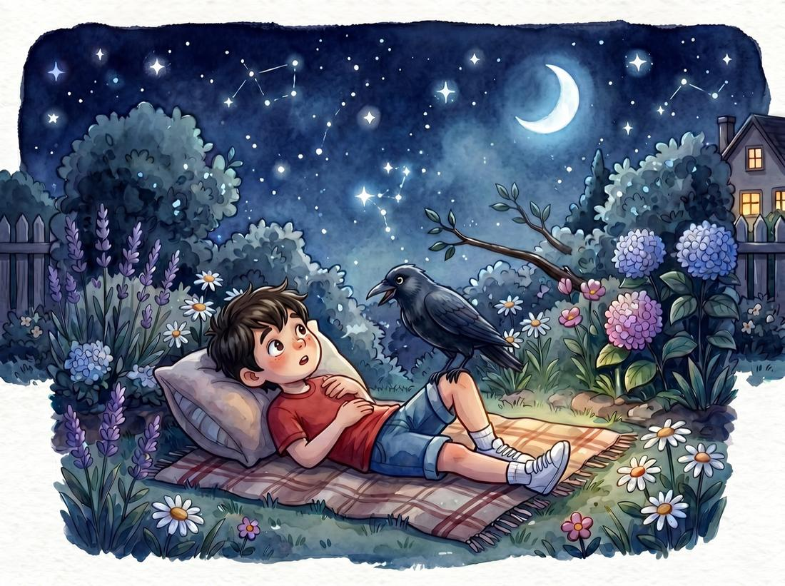

Bir dostluk masalı
🌙 İyi geceler okuması
Merhaba! Benim adım Kaya. Bu da en iyi arkadaşım Karga.
Yuvasından düşüp bahçemizde bulunca, hemen alıp eve getirdik.
Önce kanadını, gagasını iyileştirdik. Sonra da onu besledik.
Annem güzel bir yuva yaptı. Artık Karga da bizimleydi. Karga benim en iyi dostum. 💚

Bizim sokakta herkesin bir dostu var.
Ama bir dertleri varmış… Karga bu haberi verdi. Hep birlikte toplandılar, bir çözüm bulmaya.

Önce Hamster söze başladı: “Bize isimler taktılar. Kediye nankör dediler.
Kimimiz çok yaramaz, kimimiz laf dinlemez… Oysa hepimiz aynıyız!”

Kedi sever kendi halini. Tavşan hiç durmaz yerinde. Balık yüzer bir ileri bir geri. Kaplumbağa çok sever yemeyi.
Her birimiz farklıyız, ama hepimiz çok kıymetliyiz. ✨

Karga’nın haberi tüm şehre yayıldı.
Kulaktan kulağa, evden eve…
Çocuklar, anneler, babalar toplandı.

Hepsi sessizce dinledi.
Bir çocuk fısıldadı: “Bunu hiç bilmiyordum.”
O gün herkes hayvanına biraz daha şefkatle baktı. 🐾

O gece Kaya ile Karga bahçedeydi.
Yıldızlar çıkmıştı, hava ılık ve sakindi. 🌟
Karga yaslandı omzuna: “İnsanlar dinlemeyi öğrendi.”
Sokaktaki hayvanlar artık daha az korktu.
Evdeki dostlar yalnız kalmadı.
Çünkü bazen tek bir tatlı söz, her şeyi anlamaya yeter. 💫
İyi geceler… 🌙